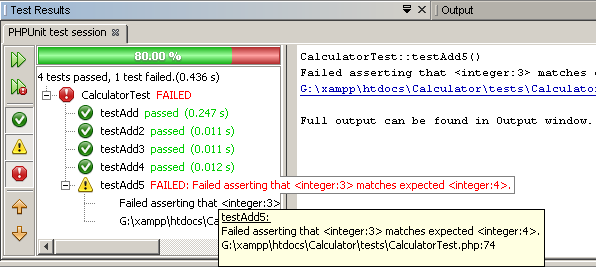

Apache NetBeans
Apache NetBeansJust released!
Testando com o PHPUnit e Selenium
| This tutorial needs a review. You can open a JIRA issue, or edit it in GitHub following these contribution guidelines. |
O NetBeans IDE para PHP oferece suporte aos testes PHPUnit automatizados. Graças ao PHPUnit, o NetBeans IDE fornece a cobertura de código para PHP, semelhante à cobertura de código que o IDE fornece ao Python. A saída do teste aparece na mesma janela de saída rica em funcionalidades que os executores de teste JUnit, e Python do IDE utilizam.
O NetBeans IDE também suporta o framework de teste portátil Selenium, em combinação com o PHPUnit. Um plug-in Selenium está disponível na Central de Atualização. A instalação deste plug-in adiciona um servidor Selenium aos servidores registrados do IDE e adiciona opções de teste Selenium aos menus PHP.

Figure 1. O conteúdo desta página se aplica ao NetBeans IDE 7.2, 7.3, 7.4 e 8.0
Para seguir este tutorial, são necessários os recursos e o software a seguir.
| Software ou Recurso | Versão Necessária |
|---|---|
Pacote de download do PHP |
|
Um mecanismo PHP, incluindo PEAR |
Versão 5. |
Um servidor web |
É recomendado o Apache HTTP Server 2.2. |
Versão 3.4.0 ou superior. |
|
Como versão de PHPUnit. |
Instalando o PHPUnit
Use PEAR para instalar o PHPUnit, conforme descrito na documentação do PHPUnit e no Gerador do Esqueleto do PHPUnit, conforme descrito na documentação do Gerador do Esqueleto. Instale o PHPUnit versão 3.4.0 ou superior. Nenhuma configuração especial é necessária. Após o PHPUnit ter sido instalado, o NetBeans poderá reconhecê-lo. Note que é necessário ter o PEAR instalado com seu mecanismo PHP. Note também que a documentação PHPUnit informa que o PHPUnit é normalmente instalado no diretório PEAR local. Eles fornecem um caminho de /usr/lib/php/PHPUnit , mas no XAMPP para Windows, é XAMPP_HOME\php\PEAR\PHPUnit .
Para verificar se o NetBeans IDE reconhece sua instalação PHPUnit, abra Ferramentas > Opções (No Mac, abra Preferências do NetBeans) e examine a janela PHP. Abra a guia Teste de Unidade. Os caminhos para os scripts do Gerador do Esqueleto e do PHPUnit deverão ser exibidos. Se um script não estiver lá, clique em Pesquisar, ao lado do campo vazio. O IDE procura, no sistema local, o script. Como alternativa, clique em Procurar e procure o script.

Criando e Executando Testes PHPUnit
O NetBeans IDE pode criar e executar testes PHPUnit em todas as classes PHP de um arquivo. Para ter certeza de que o gerador de teste irá funcionar, forneça ao arquivo PHP o mesmo nome que a primeira classe do arquivo.
Para criar e executar testes PHPUnit para um classe:
-
Crie um projeto PHP denominado Calculador. Nesse projeto, crie um arquivo denominado
calculator.php. Nesse arquivo, digite ou cole a classe Calculator a partir do capítulo Gerador do Esqueleto da documentação do PHPUnit.
<?php
class Calculator
{
public function add($a, $b)
{
return $a + $b;
}
}
?>-
Adicione um bloco de comentário com a anotação @assert e alguma amostra de entrada e saída. Observe que uma afirmação incorreta está incluída neste exemplo.
<?php
class Calculator
{
/**
* @assert (0, 0) == 0
* @assert (0, 1) == 1
* @assert (1, 0) == 1
* @assert (1, 1) == 2
* @assert (1, 2) == 4
*/
public function add($a, $b)
{
return $a + $b;
}
}
?>*Observação: *Você pode usar autocompletar código da anotação para adicionar aotações @assert. Navegue entre os parâmetros com a tecla Tab ou clique em Enter depois de preencher um valor de parâmetro.
![]image::images/assert-cc-complete.png[](images/assert-cc.png)
-
Na janela Projetos, clique com o botão direito do mouse no nó Calulator.php e selecione Ferramentas > Criar Testes PHPUnit. Observe que você pode criar testes para todos os arquivos em um projeto a partir do menu de contexto para o nó Arquivos de Código-Fonte. image::images/create-tests.png[]
-
Na primeira vez que você cria testes, uma caixa de diálogo é aberta perguntando pelo diretório onde deseja armazenar os arquivos de teste. Nesse exemplo, a função Procurar foi utilizada para criar um diretório
testes. image::images/test-directory.png[]
Observação: você pode escrever, manualmente, vários testes para um projeto. Se escrever vários testes, você poderá organizá-los em subpastas do diretório de arquivos de teste, como "importante" ou "rápido". Em seguida, você poderá executar testes em uma subpasta clicando com o botão direito do mouse nessa pasta e selecionando Executar Testes.

-
O IDE gera uma classe de teste de esqueleto em um arquivo denominado CalculatorTest.php, que aparece em sua janela Projetos e é aberta no editor. image::images/test-class-in-project.png[]
Observe que um teste é criado para cada anotação @assert .
/**
* Generated from @assert (1, 1) == 2.
*/
public function testAdd4()
{
$this->assertEquals(
2,
$this->object->add(1, 1)
);
}-
É possível testar um arquivo individual ou todo o projeto. Para testar o projeto, clique com o botão direito do mouse no nó pai do projeto e selecione Testar ou pressione Alt-F6. Para testar o arquivo Calculator.php, clique com o botão direito do mouse no nó do arquivo e selecione Testar ou pressione Ctrl-F6/⌘-F6. Esse exemplo tem somente uma classe em um arquivo, portanto, os resultados são os mesmos. O IDE executa os testes e exibe os resultados na janela Resultados do Teste. image::images/test-results-narrow.png[]
Uma versão textual mais detalhada dos resultados é exibida na janela de Saída.

Usando Grupos de Teste
Você pode selecionar quais grupos de testes quer executar quando for executar o conjunto de testes. Por exemplo, você pode ter alguns testes que deseja executar em um ambiente de produção e outros testes que deseja executar nos ambientes de produção e de desenvolvimento. Os testes antigos seriam colocados num grupo produção e os testes posteriores nos grupos produção e desenvolvimento . Quando o conjunto de testes é executado no ambiente de desenvolvimento, seleciona-se somente o grupo de teste de desenvolvimento a ser executado.
É preciso ativar os grupos de teste para um projeto PHP, antes de usar os grupos de teste em qualquer arquivo do projeto.
Para marcar um teste como parte de um grupo de teste, anote o método de teste com @group [nome do grupo] .
Para criar e executar grupos de teste:
-
Na janela Projetos, clique com o botão direito do mouse no nó Calculadora e selecione Propriedades. Serão Exibidas as Propriedades do Projeto.
-
Nas Propriedades do Projeto, selecione a categoria PhpUnit. Selecione Solicitar Grupos de Teste, Antes de Executar os Testes. Clique em OK. image::images/test-group-properties.png[]
-
Abra
CalculatorTest.phpno editor. -
Para os métodos
testAdd,testAdd3etestAdd5, acrescente a anotação@group production. image::images/production-group-annotation.png[] -
para os métodos
testAdd2etestAdd4, adicione as anotações@group productionedesenvolvimento @group. image::images/production-development-group-code.png[] -
Clique com o botão direito do mouse no nó
Calculator.phpe selecione Teste. Uma caixa de diálogo será aberta, perguntando quais grupos de teste serão executados. Selecione “development” e clique em OK. O IDE só executa os testes anotados com@group development. image::images/select-test-group.png[]
Para obter mais informações sobre os grupos de teste PhpUnit no NetBeans IDE, consulte o post do blog do NetBeans IDE para PHPUsando Grupos de Teste da Unidade PHP.
Resultados de Teste e Saída do IDE
Os resultados dos testes PHPUnit são exibidos em duas das janelas do IDE, Resultados do Teste e Saída. A janela Resultados do Teste tem um painel gráfico e um painel de texto curto. A janela de Saída fornece um versão textual mais detalhada da saída. Nesta seção você explora as janelas Resultados do teste e Saída em mais detalhes.
Na janela Resultados do Teste, você obtém informações sobre os testes que falharam destas localizações:
-
As mensagens no painel IU anexado à entrada da árvore para os testes que falharam
-
Texto no painel direito, incluindo links para as linhas do código de teste que falhou
-
Texto da dica de ferramenta que aparece quando você passa o cursor sobre o teste que falhou no painel de IU

A janela Resultados do teste inclui os seguintes botões no lado esquerdo:
-
Reexecutar o teste image::images/rerun-button.png[]
-
Mostrar testes com falha image::images/show-failed.png[]
-
Mostrar testes que passaram image::images/show-passed.png[]
-
Mostrar testes que passaram, mas com erros image::images/show-error.png[]
-
Navegue entre mostrar o próximo resultado do teste image::images/next-test-button.png[] ou o resultado do teste anterior image::images/previous-test-button.png[]
A janela de Saída mostra a saída completa do script PHPUnit. Ela pode ser útil quando você não pode identificar a causa de um erro com as informações na janela Resultados do Teste. Como na janela Resultados do Teste, a janela de Saída inclui links para a linha da classe de teste que falhou. Também inclui botões no lado esquerdo para reexecutar o teste e para abrir a janela Opções do PHP. image::images/options-link-button.png[]
Cobertura de Código
O NetBeans IDE para PHP oferece a cobertura de código junto com o suporte a PHPUnit. (O IDE também oferece cobertura de código para Python). A cobertura do código verifica se todos os seus métodos são cobertos pelos testes PHPUnit. Nesta seção, você vê como funciona a cobertura de código com sua classe Calculator existente.
Para utilizar a cobertura de código:
-
Abra Calculator.php e adicione uma função
addduplicada, denominadaadd2. A classeCalculatoragora se parece com o seguinte:
<?php
class Calculator {
/**
* @assert (0, 0) == 0
* @assert (0, 1) == 1
* @assert (1, 0) == 1
* @assert (1, 1) == 2
* @assert (1, 2) == 4
*/
public function add($a, $b) {
return $a + $b;
}
public function add2($a, $b) {
return $a + $b;
}
}
?>-
Clique com o botão direito do mouse no nó do projeto. No menu de contexto, selecione Cobertura de Código > Coletar e Exibir a Cobertura de Código. Por default, Mostrar Barra do Editor também é selecionado. image::images/turn-on-code-coverage.png[]
-
O editor agora tem uma barra do editor de cobertura de código na parte inferior. Como a cobertura do código ainda não foi testada, a barra do editor informa 0% de cobertura. (Ela também exibe isso após você clicar em Limpar para limpar os resultados do teste). image::images/editor-bar-before.png[]
-
Clique em Testar para testar o arquivo aberto ou em Todos os Testes para executar todos os testes do projeto. Os Resultados do Teste serão Exibidos. Além disso, a barra Cobertura de Código lhe informa qual a porcentagem das instruções de código executáveis é coberta pelos testes. Na janela editor, o código coberto é realçado em verde e o código não coberto é realçado em vermelho.
*Advertência: *se os arquivos de testes forem gerados novamente DEPOIS da adição da função add2, os testes PHPUnit não serão executados. Isso ocorre porque o PHPUnit cria duas funções testAdd2 conflitantes. Não diferencie funções acrescentando números no final, caso pretenda usar o PHPUnit em mais de uma função como essa. Consulte a documentação do PHPUnit.

-
Na Barra do Editor, clique em Relatório… O relatório de Cobertura de Código será aberto, mostrando os resultados de todos os testes executados em seu projeto. Os botões no relatório permitem limpar os resultados, reexecutar todos os testes ou desativar a cobertura de código (clique em Concluído). image::images/code-coverage-report.png[]
-
Você pode adicionar outra classe ao seu projeto, deletar e recriar os arquivos de teste e examinar novamente o relatório de cobertura de código. Sua nova classe será listada. No relatório a seguir, a classe
Calculatortem novamente uma função que não está incluída nos testes. image::images/code-coverage-report2.png[]
Utilizando Configurações Específicas do Projeto
No IDE, você pode selecionar as configurações personalizadas a seguir no seu projeto:
-
Um arquivo bootstrap
-
Um arquivo de configuração XML
-
Um conjunto de testes
-
Um script PHPUnit personalizado
Para definir uma configuração específica de projeto:
-
Clique com o botão direito do mouse no nó do projeto ou no nó Arquivos de Teste do projeto e selecione Propriedades. Isso abre a caixa de diálogo Propriedades. image::images/project-ctxmenu.png[]
-
Selecione a categoria PHPUnit. Uma caixa de diálogo será aberta, na qual você pode selecionar um arquivo bootstrap personalizado, um arquivo de configuração XML ou um arquivo de conjunto de testes. image::images/proj-properties.png[]
-
Se não estiver familiarizado com a estrutura dos arquivos bootstrap ou de configuração XML, você poderá usar o NetBeans IDE para gerar um esqueleto para você. Você também pode localizar instruções sobre como utilizar a caixa de diálogo clicando em Ajuda image::images/proj-properties-selected.png[]
A opção bootstrap é necessária em projetos que utilizam um carregador de classe personalizado, por exemplo, implementando a função mágica __autoload() . Você também pode utilizar a opção bootstrap se for necessário incluir um arquivo com antecedência, como um arquivo que defina as constantes globais utilizadas por várias classes no projeto.
O arquivo de configuração XML permite definir as opções utilizadas em uma chamada da linha de comandos. Há uma introdução completa no manual do PHPUnit. Você também pode utilizar o arquivo de configuração XML para definir variáveis globais e definições do php.ini dos casos de teste. Você pode definir a opção bootstrap também no arquivo de configuração XML.
Se você definir um conjunto de testes personalizado, esse conjunto será executado sempre que você selecionar Executar > Testar Projeto. Isso é particularmente útil quando você desejar executar somente um subconjunto dos testes ou caso queira utilizar as funcionalidades adicionadas recentemente de PHPUnit que devem ser adicionadas manualmente, como Provedores de Dados. Observe que você pode definir quantos conjuntos de testes quiser e executá-los de forma separada clicando com o botão direito do mouse no explorador de projetos e selecionando "executar". Para evitar confusões, o NetBeans lhe avisa se estiver utilizando um Conjunto de Testes personalizado. A notificação pode ser localizada nos Resultados do Teste e na janela de Saída.
Você pode usar um script de PHPUnit personalizado para um projeto, em vez de o srcipt default selecionado em Ferramentas > Opções. O sript de PHPUnit personalizado pode incluir quaisquer mudanças de linha de comandos descritas no manual de PHPUnit.
Executando Testes no Framework Selenium
O Selenium é um framework de teste de software portátil para aplicações Web. Os testes podem ser escritos como tabelas HTML ou codificados em diversas linguagens de programação populares e podem ser executados diretamente na maioria dos browsers modernos da Web. O Selenium pode ser implantado no Windows, Linux e Macintosh. Para obter mais detalhes, consulte o Web site do Selenium.
O NetBeans IDE tem um plug-in que inclui um servidor Selenium. Com esse plug-in, você pode executar testes Selenium nos projetos PHP, aplicações Web ou Maven. Para executar testes Selenium no PHP, é preciso instalar o pacote Testing Selenium em seu mecanismo PHP.
Para executar testes Selenium no PHP:
-
Abra um prompt de comando e execute o comando
pear install Testing_Selenium-beta. É preciso terPHP_HOME/php/PEARem seu Caminho. Se o comando obtiver êxito, o prompt exibiráinstall ok: channel://pear.php.net/Testing_Selenium-0.4.3. -
No IDE, abra Ferramentas > Plug-ins e instale o Módulo Selenium para PHP.
-
Na janela Projetos, clique com o botão direito do mouse no nó do projeto Calculador. Selecione Novo > Outro. O Assistente de Novo Arquivo será aberto. Selecione Selenium e clique em Próximo. image::images/new-selenium.png[]
-
Na primeira vez que você cria um teste Selenium, será exibida uma caixa de diálogo solicitando que você defina um diretório para os arquivos de teste Selenium. Esse diretório deverá ser separado do diretório dos arquivos de teste PHPUnit. Caso contrário, os testes Selenium serão executados cada vez que você executar testes de unidade. A execução de testes funcionais como o Selenium, normalmente leva mais tempo do que a execução de testes de unidade, portanto, você provavelmente não desejará executar esses testes cada vez que executar testes de unidade.
-
Aceite os defaults na página Nome e Localização e clique em Finalizar. O novo arquivo de teste Selenium será aberto no editor e aparecerá na janela Projetos. image::images/selenium-test-in-project.png[]
-
O item Executar Testes Selenium está agora adicionado ao menu de contexto do projeto. Clique nesse item e os resultados do teste Selenium serão exibidos na janela Resultados do Teste, da mesma forma que os resultados de testes PHPUnit.
Mais Exercícios
A seguir, encontam-se mais algumas ideias para você explorar:
-
Adicione uma segunda classe a Calculator.php, como uma classe
Calculator2que multiplica $a e $b. Delete e gere novamente os testes. -
Se você experimentar o Tutorial de Criação de uma Aplicação CRUD de várias partes, crie um teste Selenium para o projeto final. link:/about/contact_form.html?to=3&subject=Feedback:PHPUnit and Selenium on NB 6.7[Enviar Feedback neste Tutorial]
Para enviar comentários e sugestões, obter suporte e manter-se informado sobre os desenvolvimentos mais recentes das funcionalidades de desenvolvimento PHP do NetBeans IDE, junte-se à lista de correspondência users@php.netbeans.org. Esta lista é espelhada nos fóruns do NetBeans IDE.
Consulte Também
Para obter mais informações sobre como testar o PHP no NetBeans IDE , consulte os seguintes recursos: